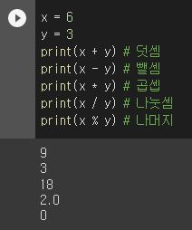
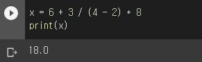
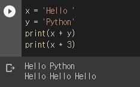
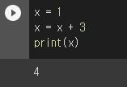
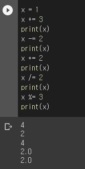
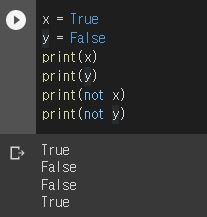
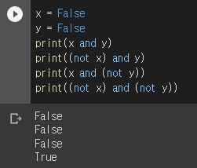
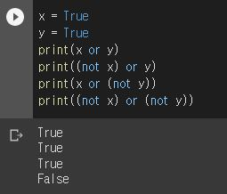
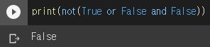

연산자
이번에는 연산자에 대하여 알아보겠습니다.
연산자는 프로그래밍 언어에서 특정 연산을 하도록 하는 문자입니다. 예를 들어서,
우리가 변수를 배울 때 아래와 같은 코드를 작성 했었죠?
여기서 두번째 줄에 x에 값을 대입해주기 위하여 사용된 '=' 문자도 연산자의 한 종류입니다.
연산자의 종류는 굉장히 많은데 '='는 대입 연산자에 해당합니다.
그러면 여기서 "첫번째 줄에도 '='가 쓰였는데 저것은 대입이 아닌가?"라는 의문이 생기실 수도 있습니다.
이것의 답은 첫번째 줄은 새로운 변수를 선언하는 것으로서, 대입 연산자에 해당하지 않습니다.
산술 연산자
산술 연산자는 사칙연산과 같은 작업을 하는 연산자를 의미합니다.
1) + : 덧셈
2) - : 뺄셈
3) * : 곱셈
4) / : 나눗셈
위 4가지가 가장 기본적인 산술 연산자입니다. 이 외에도 나머지의 값을 구할 수 있는
5) % : 나머지
나머지 연산자도 있습니다.
그러면 실습으로 x에는 6의 값을 y에는 3의 값을 주고 각 +, -, *, /, %로 계산을 해보겠습니다.
위의 결과를 보듯이 덧셈에서는 6 + 3을 하여 9가 나왔고, 뺄셈에서는 6 - 3을 하여 3이 나왔으며, 곱셈에서는 6 * 3을 하여 18이 나왔습니다. 또한, 나눗셈에서는 6 / 3을 하여 2가 나왔고 나머지는 6 / 3을 하면 나머지 값은 0이므로 0이 나오는 것을 확인하실 수 있습니다.
또한 계산기를 쓸 때 처럼 연산을 여러번 하는 것도 가능합니다.
그리고 '+'연산자와 '*'연산자는 문자열에도 사용 가능합니다. 실습으로 x에는 'Hello '를 y에는 'Python'을 넣고 print(x + y)와 print(x * 3)을 해보겠습니다.
실습 결과를 보듯이 '+'를 사용하여 문자열을 이어줄 수 있고, '*'를 이용하여 같은 문자열을 여러번 출력 가능합니다.
대입 연산자
대입 연산자는 특정 값에 연산을 한 값을 바로 설정 할 때 사용 할 수 있는 연산자입니다. 예를 들어서 다음과 같은 코드가 있다면
덧셈 말고 다른 연산도 가능하며, 다음과 같이 작성할 수도 있습니다.
각 결과에 따라 4, 2, 4, 2, 2가 나오는 것을 보실 수 있습니다.
논리 연산자
논리 연산자는 지난 시간에 배운 Boolean 타입을 위한 연산자입니다. 논리 연산자는 다음 장에서 살펴볼
if문에서 매우 유용하며, 총 3가지의 종류가 있습니다.
1) not
2) and
3) or
NOT
NOT 연산자는 True는 False로, False는 True로 바꿔주는 역할을 합니다. 그러면 실습을 한번 해보겠습니다.
x의 값은 False로 변경되고, y의 값은 True로 변경되는 것을 볼 수 있습니다.
AND
이번엔 AND 연산자를 알아보겠습니다. AND 연산자는 둘 다 True 일때만 결과물이 True가 됩니다. 그러면 실습을 한번 해보겠습니다.
실습 결과를 보시면 not을 이용하여 x와 y 모두 True로 바꾸어 주었을 때에만 True가 나온 것을 보실 수 있습니다.
OR
논리 연산자의 마지막으로 OR 연산자를 알아보겠습니다. OR 연산자는 양쪽의 값 중 하나라도 True라면 결과물이 True가 됩니다. 그리고 두 값이 둘 다 False일 때만 False가 됩니다. 그러면 실습을 통해서 확인해 보겠습니다.
실습 결과를 보시면 not을 이용하여 x와 y 모두 False로 바꾸어 주었을 때만 False가 나온 것을 보실 수 있습니다.
연산 순서
사칙 연산을 할 때 곱셈 나눗셈이 먼저고 그다음이 덧셈 뺄셈인 것처럼, 논리 연산자도 순서가 있습니다. 순서는 NOT -> AND -> OR입니다. 그러면 실습을 통해 확인해 보겠습니다.
먼저 False and False에서 False의 값이 나오고 True or False에서 True가 나왔지만, 마지막 not으로 인하여 False가 출력되는 것을 볼 수 있었습니다.
비교 연산자
비교 연산자는 두 값을 비교 할 때 사용하는 연산자입니다. 연산이 올바르면 True 값을 올바르지 않으면
False 값을 반화하는 연산자입니다. 비교 연산자는 6개가 있습니다.
1) == : 값이 동일한지 비교하는 연산자
2) != : 값이 동일하지 않은지 비교하는 연산자
3) < : 왼쪽 값이 오른쪽 값보다 작은지 비교하는 연산자
4) > : 왼쪽 값이 오른쪽 값보다 큰지 비교하는 연산자
5) <= : 왼쪽 값이 오른쪽 값보다 작거나 같은지 비교하는 연산자
6) >= : 왼쪽 값이 오른쪽 값보다 크나 같은지 비교하는 연산자
그러면 x는 15의 값을 y는 20의 값을 주고 실습을 해보겠습니다.
실습의 결과를 보면 알 수 있듯이 '=='의 결과는 False가 뜨고, '!='의 결과는 True가 뜨고,
'<'의 결과는 True가 뜨고, '>'의 결과는 False가 뜨며, '<='의 결과는 True가 떳으며,
마지막으로 ">="는 False가 뜨는 것을 볼 수 있습니다.
이번에는 연산자에 대하여 알아보았습니다. 앞으로 살펴볼 조건문, 반복문 등에서 많이 사용함으로 잘 기억해두시면 앞으로 공부할 내용을 더 쉽게 이해할 수 있을 것입니다.